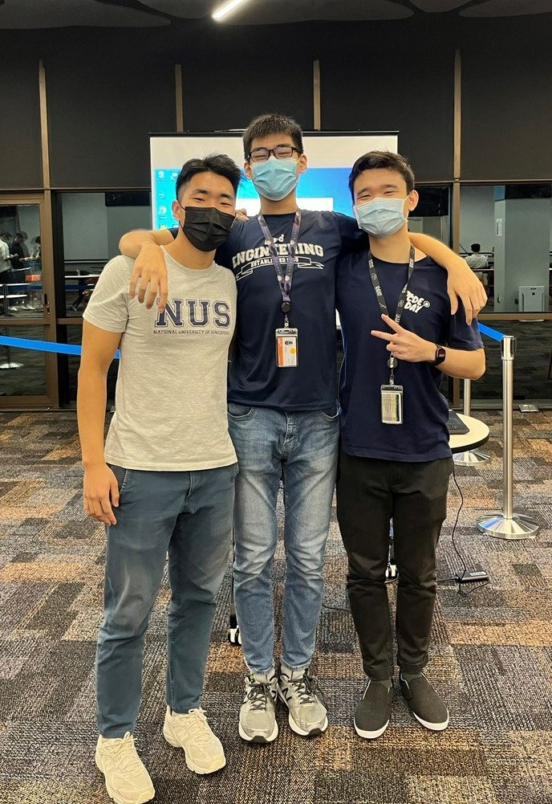
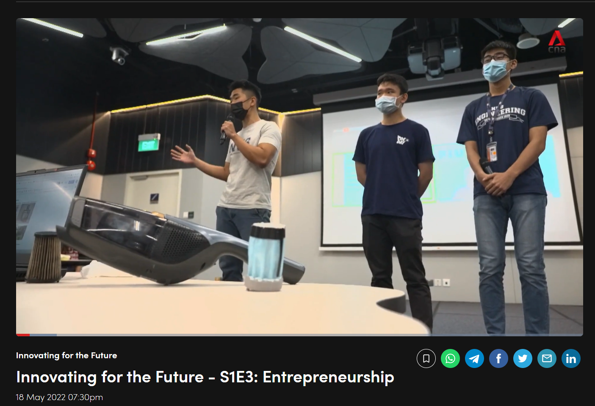
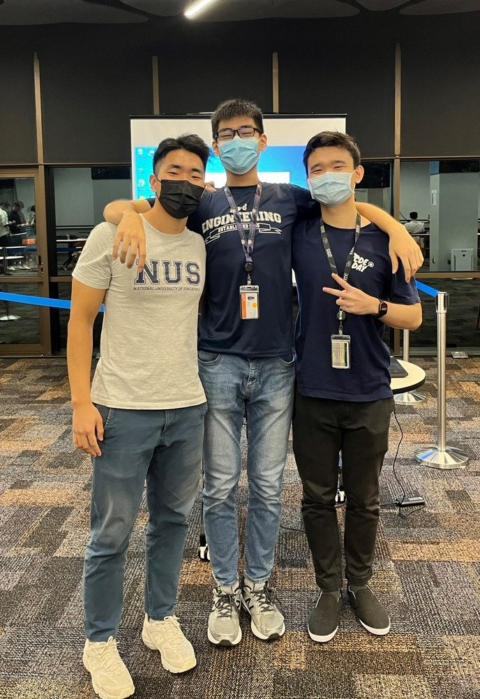
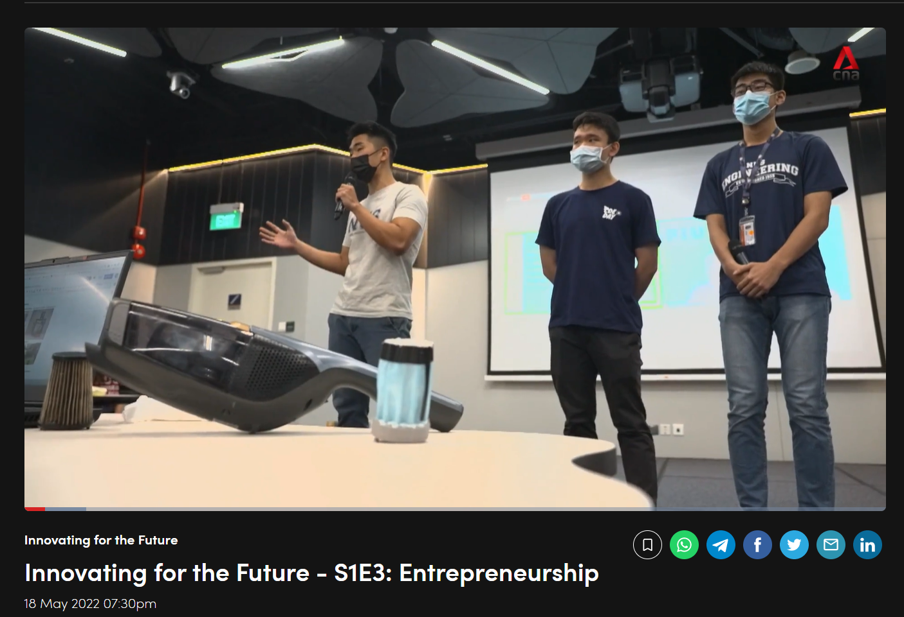
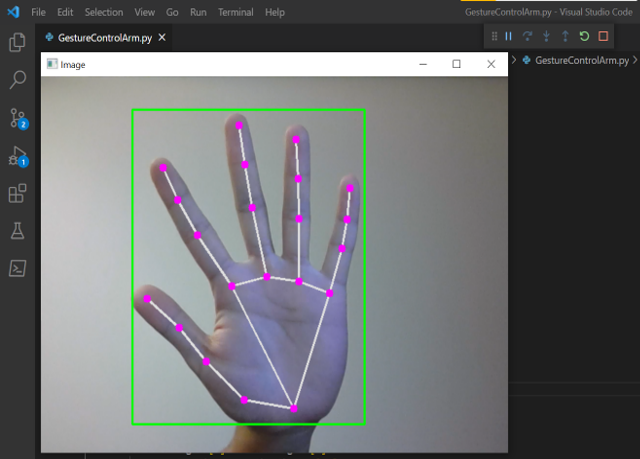
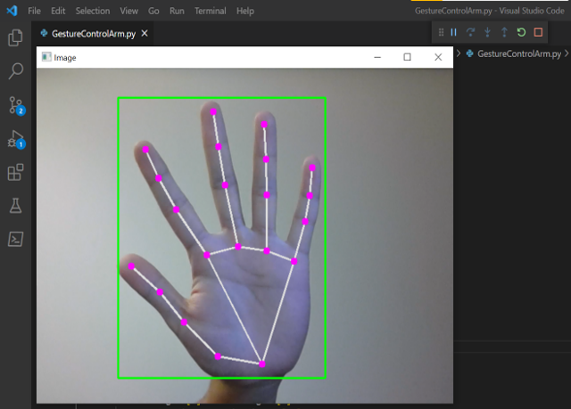

There are secrets to our world that only practice can reveal, and no opinion or analysis will ever capture in full. This secret property is, of course, revealed through time, and, thankfully, only through time.
Nassim Nicholas TalebI explain some of the highlights of my internship projects as a Research Engineer at Govtech.
1
In this project, I build the basic self-attention mechanism to calculate the attention scores of an input sentence.
2
In this project, I build a LSTM-based model using Pytorch and some math, and we will compare its performance against our previous RNN model in generating sentences.
3
In this project, I build a RNN using only NumPy and some math, and it will be used to generate text.
4
Building a Neural Network from scratch
Fall 2024
In this project, I build an image classifying neural network using only NumPy and some math.
5
In this project, I study the effectiveness of Singular Value Decomposition and the Fourier Transform on image compression tasks.
6
Spring - Summer 2024
Engineered and modified an 8-bit bus organized computer based on the SAP-1 design / Von-Neumann architecture, including the Arithmetic Logic Unit, Program Counter, RAM, IR & more.
7
Hardware Systems Engineering (Internship at Mill Industries)
Spring - Winter 2023
Grinder motor design, pneumatically-actuated factory test fixtures, automated sensor data collection, experimentation & analysis systems.
8
Summer 2023
Smart glasses that served as an IOT-enabled travel companion & guide for the visually impaired.
9
Summer 2023
Algorithm design for wildfire tracking with crowdsourced geospatial phone data.
10
Summer 2022
Designed an origami-style folding plastic lunchbox to combat plastic waste from takeout food.
11
Engineered a product to turn used medical face masks into vacuum cleaner filters.
 



12
International Space Challenge 2022 - 2nd Place
Summer 2022
Designed a novel high-voltage energy generator for a satellite to harness energy from electrons in the Van Allen's Belt region.
13
Mechanical design and engineering of custom-built drones for data-acquisition in GPS-denied & confined space environments.
14
3-D Printed Gesture Tracking Robot Hand
Summer 2021
Robot hand that replicates a user's hand gestures using computer vision.
 

15